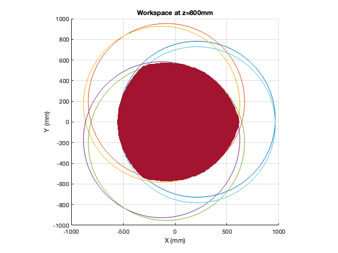
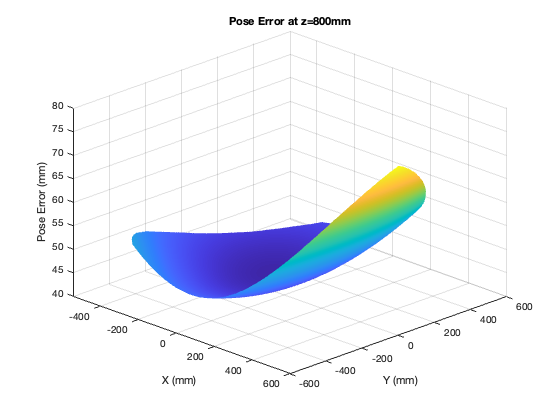

u_nom = [305.4001, -56.4357, -248.9644, -248.9644, -56.4357, 305.4001;...
111.1565, 320.0625, 208.9060, -208.9060, -320.0625, -111.1565;...
0,0,0,0,0,0];
s_nom = [92.1597, 27.055, -119.2146, -119.2146, 27.055, 92.1597;...
84.4488, 122.037, 37.58822, -37.5882, -122.037, -84.4488;...
0,0,0,0,0,0];
lo_nom = [604.8652, 604.8652, 604.8652, 604.8652, 604.8652, 604.8652];
u_real = [305.2599, -55.2814, -244.7954, -252.5755, -53.9678, 302.4266;...
115.0695, 322.9819, 208.0087, -211.8783, -320.6115, -109.4351;...
2.6210, 4.2181, 3.9365, -3.0128, 4.3181, 3.3812];
s_real = [96.6610, 22.2476, -122.4519, -120.6859, 24.7769, 91.3462;...
81.7602, 125.2511, 36.6453, -34.4565, -125.0489, -80.9866;...
1.0684, -0.5530, 4.3547, -4.9014, -4.8473, 0.2515];
lo_real = [604.4299, 607.2473, 600.4441, 605.9031, 604.5251, 600.0616];
delta_u = u_nom - u_real;
delta_s = s_nom - s_real;
delta_lo = lo_nom - lo_real;
delta_rho_i = [delta_s; delta_u; delta_lo];
delta_rho_42 = reshape(delta_rho_i, 42, 1);
list_of_configs = workspace(u_nom, s_nom, 800);
delta_P = [];
e = [];
for i = 1:size(list_of_configs,1)
Jv = jacobianV(list_of_configs(i,:)');
Jrho = jacobianRho(list_of_configs(i,:)');
delta_P(:,i) = -pinv(Jv)*Jrho*delta_rho_42;
e(:,i) = sqrt(delta_P(1,i)^2+delta_P(2,i)^2+delta_P(3,i)^2);
end
x_values = list_of_configs(:,1);
y_values = list_of_configs(:,2);
z_values = e(:);
grid on;
x_plot = linspace(min(x_values),max(x_values),1000);
y_plot = linspace(min(y_values),max(y_values),1000);
[X,Y] = meshgrid(x_plot, y_plot);
Z = griddata(x_values,y_values,z_values,X,Y);
figure
surf(X,Y,Z);
xlabel('X (mm)');
ylabel('Y (mm)');
zlabel('Pose Error (mm)');
title('Pose Error at z=800mm');
grid on;
view(45,30)
shading interp;
fprintf('The average position error (RSS) is %d mm.\n', mean(e))
There are 39376 points in the workspace.
The average position error (RSS) is 4.762552e+01 mm.
 